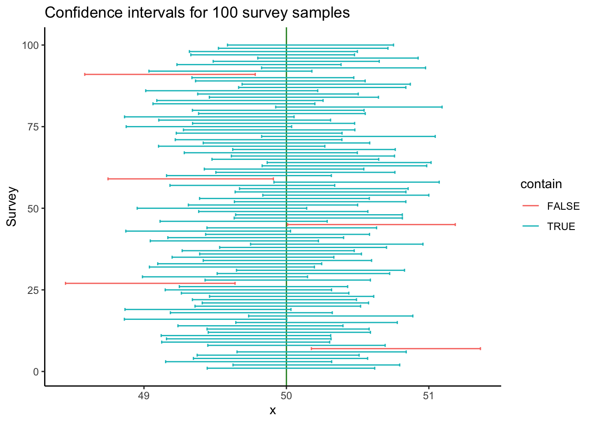

# Load packages for this script.
library(ggplot2)
library(BSDA)
library(psych)ในแบบฝึกหัดที่แล้ว เราได้ทำความเข้าใจหลักการของช่วงความเชื่อมั่นจากการสร้างช่วงที่ครอบคลุม 95% ของการแจกแจงค่าตัวอย่าง (sampling distribution) รอบ ๆ ค่าเฉลี่ยประชากร \(\mu\) โดยอาศัยความน่าจะเป็นภายใต้โค้งปกติ (normal distribution) ช่วงดังกล่าวช่วยให้เรารู้ได้ว่าโดยส่วนใหญ่แล้ว (95%) ความคลาดเคลื่อนในการสุ่มจะทำให้เราได้ค่าเฉลี่ยตัวอย่างอยู่ระหว่างค่าใด
แต่ทว่าวิธีการดังกล่าวนั้นไม่สามารถนำมาใช้ได้ในการทดสอบทางสถิติตามปกติ เนื่องจากในการศึกษาวิจัยนั้น เราแทบจะไม่สามารถทราบได้เลยว่าค่าเฉลี่ยประชากรแท้จริงแล้วมีค่าเท่าใด นั่นคือเราไม่รู้ \(\mu\) แต่รู้เฉพาะค่าเฉลี่ยของกลุ่มตัวอย่าง \(\bar{X}\)
เพื่อประมาณค่า \(\mu\) เราจะใช้ค่าเฉลี่ยกลุ่มตัวอย่าง \(\bar{X}\) แล้วสร้างช่วงความเชื่อมั่น (confidence interval) รอบ ๆ ค่า \(\bar{X}\) โดยหวังว่าขนาดของช่วงที่กว้างถึง 95% ของโค้งปกติ (normal หรือ z distribution) น่าจะครอบคลุมค่า \(\mu\)
ตามหลักการกระจายตัวใต้โค้งปกติ 95% ของข้อมูลรอบค่าเฉลี่ยจะอยู่ระหว่าง ±1.96 SD ในกรณีของ sampling distribution ก็คือ ±1.96 SE นั่นเอง เราจึงสามารถคำนวณค่าช่วงความเชื่อมั่นที่ระดับ 95% (95% confidence interval) ได้ดังนี้
\[\text{95% CI} = \bar{X} ± 1.96SE\]
นั่นคือ หากเราสุ่มกลุ่มตัวอย่างมาหนึ่งร้อยครับ (แต่ละครั้ง \(\bar{X}\) คลาดเคลื่อนไปมากบ้างน้อยบ้าง) แล้วสร้างช่วงระหว่าง ±1.96 SE (นั่นคือ 95 % ใต้โค้งปกติ) จะมี 95 ครั้งที่ช่วงดังกล่าวจะครอบคลุมค่าเฉลี่ยประชากร \(\mu\)
เราสามารถจำลองข้อมูลเพื่อให้เห็นภาพมากขึ้น สมมติว่าเราไปสุ่มกลุ่มตัวอย่าง 900 คน จากประชากรที่มี \(\mu = 50\) และ \(\sigma\) = 9.
simกราฟด้านล่างจะแสดงค่าเฉลี่ยและ 95% CI ของกลุ่มตัวอย่างในการจำลองแต่ละรอบ (เรียงตั้งแต่ครั้งที่ 1 ถึง 100 จากล่างขึ้นบน) เห็นได้ว่าในการสุ่มตัวอย่างแต่ละครั้ง เราจะได้ค่า \(\bar{X}\) ต่างกันไปในแต่ละครั้ง แต่ค่าเฉลี่ยกลุ่มตัวอย่างเหล่านี้ก็กระจายอยู่รอบ ๆ ค่าเฉลี่ยประชากร \(\mu\)
head(sim)## survey_id mean sd se LL UL contain
## 1 1 50.03195 8.998839 0.2999613 49.44403 50.61986 TRUE
## 2 2 50.21028 8.955646 0.2985215 49.62519 50.79537 TRUE
## 3 3 49.73491 8.921281 0.2973760 49.15207 50.31776 TRUE
## 4 4 49.95857 9.359935 0.3119978 49.34707 50.57008 TRUE
## 5 5 49.94202 8.700159 0.2900053 49.37362 50.51042 TRUE
## 6 6 50.24719 9.089598 0.3029866 49.65335 50.84103 TRUE
ในการจำลอง 100 ครั้ง เส้นสีฟ้าแทนการจำลองครั้งที่ค่า 95% CI ครอบคลุมค่า \(\mu\) ส่วนเส้นสีแดงแทนครั้งที่กลุ่มตัวอย่างคลาดเคลื่อนไปจน 95% CI ไม่ครอบคลุม \(\mu\)
การจำลอง 100 ครั้งนี้ทำให้เราเห็นได้ว่า แม้ว่าเราจะสุ่มกลุ่มตัวอย่างจากประชากรเดียวกัน แต่เราพบ 5 ครั้ง (สีแดง)ที่เกิดความคลาดเคลื่อนจากการสุ่มจนทำให้ค่าเฉลี่ยกลุ่มตัวอย่าง \(\bar{X}\) ที่ได้แตกต่างไปจากค่าเฉลี่ยประชากร \(\mu\) จนถึงระดับนัยสำคัญทางสถิติ (นั่นคือ เราพบว่า \(\bar{X}\) แตกต่างกับค่าที่เราคิดว่าเป็น \(\mu\) มากเสียจนเราเชื่อว่ากลุ่มตัวอย่างนี้แตกต่างจากประชากรที่เราต้องการทดสอบ) แต่ในความเป็นจริงแล้วความแตกต่างดังกล่าวเป็นเพียงแค่ความคลาดเคลื่อนทางสถิติ ความผิดพลาดนี้เรียกว่า Type I Error ซึ่งเรากำหนดไว้ว่าไม่ควรเกิน 5% (\(\alpha = .05\)) นั่นหมายความว่า หากเราเลือกใช้ 95% CI เราจะมั่นใจได้ว่า Type I error จะอยู่ที่ไม่เกิน 5% (นั่นคือ หากแท้จริงแล้วกลุ่มตัวอย่างของเราไม่ได้แตกต่างจากประชากร จะมีโอกาสเพียง 5% เท่านั้นที่เราจะบังเอิญได้ \(\bar{X}\) ที่แตกต่างไปจาก \(\mu\) จนถึงระดับนัยสำคัญทางสถิติ)
ดังนั้นค่า 95% CI จึงช่วยบอกช่วงที่เรามั่นใจได้ว่า ความคลาดเคลื่อนทางสถิติส่วนใหญ่จะอยู่ในช่วงนี้ เราจึงอนุมานต่อไปว่าช่วงดังกล่าวน่าจะครอบคลุมค่าเฉลี่ยประชากร \(\mu\)
สมมติให้เรามีกลุ่มตัวอย่าง M = 50.5, SD = 9, N = 900.
m <- 50.5
sd <- 9
n <- 900
se <- sd/sqrt(n)ช่วงความเชื่อมั่น 95% จะอยู่ระหว่าง ±1.96 SE รอบค่าเฉลี่ย เราสามารถคำนวณหาขอบเขตล่าง (lower limit; LL) และขอบเขตบนได้ (upper limit; UL)
LL <- m - (1.96 * se) # Lower limit
UL <- m + (1.96 * se) # Upper limit
print(paste0("95% CI [", LL,", ", UL, "]"))## [1] "95% CI [49.912, 51.088]"หากเราต้องการทดสอบว่ากลุ่มตัวอย่างนี้มาจากประชากรที่มี \(\mu = 50\) หรือไม่ เราสามารถลองเทียบช่วงดังกล่าวกับ sampling distribution ของ \(\mu = 50\) ได้
สังเกตว่า
เนื่องจากช่วงความเชื่อมั่นถูกคำนวนมาจาก SE เดียวกัน ทั้งมุมมอง 1 และ 2 ก็คือการทดสอบเดียวกัน ได้ผลลัพธ์ไม่แตกต่างกัน
กล่าวคือ เมื่อเราพบว่าช่วง 95% CI ของค่าเฉลี่ยกลุ่มตัวอย่างนั้นครอบคลุมค่าที่เราต้องการทดสอบสมมติฐาน (\(\mu = 50\)) แสดงว่า หากกลุ่มตัวอย่างนี้มาจากประชากรที่มีค่าเฉลี่ยเท่ากับ 50 จริง ค่า 50.5 นั้นยังอยู่ในช่วง 95% ของความคลาดเคลื่อนทางสถิติ เราจึงยังไม่สามารถสรุปได้ว่าค่า 50.5 นี้ แตกต่างจาก 50 อย่างมีนัยสำคัญทางสถิติ (นั่นคือเราอนุมานว่าค่า 50.5 นี้เป็นเพียงแค่ sampling error บน assumption ว่ากลุ่มตัวอย่างไม่ต่างจากประชากร )
การคำนวณค่า 95% CI ที่แสดงมาข้างต้นนี้ใช้ค่าความน่าจะเป็นใต้การแจงแจงโค้งปกติ (normal หรือ z-distribution) ดังนั้นผลการทดสอบนี้ ก็คือการทดสอบด้วย z-test นั่นเอง
zsum.test(m, sd, n, mu = 50)##
## One-sample z-Test
##
## data: Summarized x
## z = 1.6667, p-value = 0.09558
## alternative hypothesis: true mean is not equal to 50
## 95 percent confidence interval:
## 49.91201 51.08799
## sample estimates:
## mean of x
## 50.5อย่างไรก็ดี การคำนวณค่า 95% CI หรือการใช้ z-test ก็มีข้อจำกัดอยู่ เนื่องจากการใช้ normal หรือ z-distribution นั้นจำเป็นต้องใช้ส่วนเบี่ยงเบนมาตรฐานของประชากร \(\sigma\) และค่า z เป็นการแจกแจงระดับประชากร เมื่อเอามาใช้กับกลุ่มตัวอย่างขนาดเล็กจะทำให้เราประมาณค่าความคลาดเคลื่อนต่ำเกินไป กล่าวคือ ข้อมูลกลุ่มตัวอย่างที่เราศึกษามักจะ
จึงมีการคิดค้นการแจกแจงแบบ t-distribution ขึ้นมาเพื่อแก้ไขปัญหาดังกล่าว โดยที่การแจกแจงแบบ t นั้นจะเปลี่ยนรูปร่างไปตามขนาดของ degree of freedom (ซึ่งคำนวณมาจากกลุ่มตัวอย่างอีกที)
นั่นคือในกรณีที่กลุ่มตัวอย่างมีขนาดเล็ก ค่าวิกฤติ (critical value) ของสถิติ t จะถูกปรับเพื่อรองรับความคลาดเคลื่อนที่มากขึ้น (เกณฑ์การถึงระดับนัยสำคัญสูงขึ้น) และ เมื่อกลุ่มตัวอย่างมีขนาดใหญ่ขึ้น จะค่อย ๆ มีค่าคล้ายกับสถิติ z มากขึ้น ดังกราฟการแจกแจงด้านล่าง
เห็นได้ว่าการแจกแจงแบบ t นั้นจะแบนราบกว่าการแจกจงแบบ z ส่งผลให้ช่วง 95% นั้นกว้างกว่า โดยรูปร่างของการแจกแจง t นั้นจะขึ้นอยู่กับ degrees of freedom (df) ซึ่งคำนวณมาจากจำนวนกลุ่มตัวอย่าง
กราฟด้านล่างแสดงให้เห็นว่าค่าวิกฤติของ t distribution เมื่อ df น้อยกว่านั้น มีช่วงกว้างกว่า เมื่อ df มีจำนวนมาก และเมื่อค่า df มากขึ้น ค่า critical ก็เข้าใกล้ค่า ±1.96 ของ z distribution
สำหรับ df = 10 ค่า t วิกฤติ = ±2.228.
สำหรับ df = 300 ค่า t วิกฤติ = ±1.968.
เมื่อกลุ่มตัวอย่างมากขึ้น ค่า t วิกฤติจะเข้าใกล้ค่า z วิกฤติ (±1.96)
การทดสอบด้วยสถิติ t แบบกลุ่มตัวอย่างเดียว เป็นการทดสอบค่าเฉลี่ยกับค่าที่ต้องการทดสอบ (เช่น 0 หรือค่าที่เราเชื่อว่าเป็น \(\mu\))
ลองสมมติตัวอย่างการวิจัยที่ต้องการทดสอบว่านักเรียนอ่านหนังสือถึง 2 ชั่วโมงต่อวันหรือไม่ โดยเก็บข้อมูลว่านักเรียนใช้เวลาอ่านหนังสือจริงเท่าไหร่
ให้ Mdailyreading = 96.61 นาที, SD = 54.04, N = 54.
ข้อมูลอยู่ในตัวแปรที่ชื่อว่า reading.
reading## [1] 73 159 110 95 94 164 209 125 71 83 81 0 122 114 113 144 85 118 122 122 29 207 75 132
## [25] 179 141 94 159 125 52 101 17 17 0 126 12 71 53 92 162 100 49 84 0 17 5 158 169
## [49] 46 108 135 140 38 120psych::describe(reading)## vars n mean sd median trimmed mad min max range skew kurtosis se
## X1 1 54 96.61 54.04 100.5 97.09 48.93 0 209 209 -0.12 -0.74 7.35เราต้องการทดสอบว่าค่าเฉลี่ยกลุ่มตัวอย่างนี้แตกต่างจากค่าที่เราตั้งสมมติฐานไว้ คือ 2 ชั่วโมงหรือ 120 นาทีต่อวันหรือไม่ \[H_0: \mu = 120\] หรือ \[H_0: \mu - 120 = 0\]
เราทดสอบด้วยสถิติ t
\[t = \frac{\bar{X} - 120}{SE}\] โดย \(SE = \frac{SD}{\sqrt{N}}\)
n <- length(reading)
se <- sd(reading)/sqrt(n)
t <- (mean(reading)-120)/se
se
## [1] 7.353385
t
## [1] -3.180697เราสามารถนำค่า t นี้ไปตรวจกับตาราง t distribution หรือนำไปเข้าเครื่องคำนวณค่าสถิติตามเว็บไซต์ต่าง ๆ (ค้นหา t test calculator) โดยใช้ค่า \(df = N - 1\) หรือ 54 - 1 = 53 โดยเราจะพบว่าค่าสถิติดังกล่าวแสดงว่า เวลาในการอ่านหนังสือของนักเรียนน้อยกว่า 120 นาทีอย่างมีนัยสำคัญทางสถิติที่ระดับ p < .05
ในการสร้างช่วงความเชื่อมั่น 95% ของค่าเฉลี่ยกลุ่มตัวอย่างใน t-test เราไม่สามารถใช้ช่วง ±1.96 SE ของ z-distribution ได้ เราต้องใช้ค่าวิกฤติของ t distribution แทน
คำสั่ง qt จะแสดงค่า t ตามค่า p ที่เราต้องการ ในการทดสอบแบบสองหาง เราต้องการหาค่าวิกฤติ t ที่ตรงจุดความน่าจะเป็นที่ p = .025 และ p = .975
df <- n - 1 # degrees of freedom
LL <- mean(reading) + (qt(.025, df) * se) #Lower limit
UL <- mean(reading) + (qt(.975, df) * se) #Upper limit
LL
## [1] 81.86209
UL
## [1] 111.3601ช่วงความเชื่อมั่น 95% ไม่ครอบคลุมค่าที่ต้องการทดสอบ (120 นาที) ซึ่งสอดคล้องกับผลที่พบว่านักเรียนอ่านหนังสือน้อยกว่า 120 นาทีอย่างมีนัยสำคัญทางสถิติ
t.test functionเราสามารถใช้คำสั่ง t.test เพื่อทดสอบค่าเฉลี่ยได้ สำหรับ t-test แบบกลุ่มตัวอย่างเดียว (one sample t-test) ต้องการ input argument สองตัว t.test(x, mu) คือ x ที่เป็นข้อมูล และ mu ที่เป็นค่าเฉลี่ยตามสมมติฐานที่ต้องการจะทดสอบ
t.test(reading, mu = 120) #default is a two-tailed test. ##
## One Sample t-test
##
## data: reading
## t = -3.1807, df = 53, p-value = 0.002456
## alternative hypothesis: true mean is not equal to 120
## 95 percent confidence interval:
## 81.86209 111.36013
## sample estimates:
## mean of x
## 96.61111t.test(reading, mu = 120, alternative = "less") #alternative lets you run a one-tailed test with "less" or "greater".##
## One Sample t-test
##
## data: reading
## t = -3.1807, df = 53, p-value = 0.001228
## alternative hypothesis: true mean is less than 120
## 95 percent confidence interval:
## -Inf 108.9215
## sample estimates:
## mean of x
## 96.61111Copyright © 2022 Kris Ariyabuddhiphongs